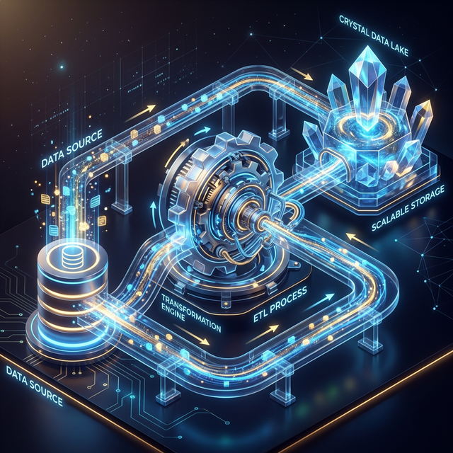

CDC ETL Architecture
A deep dive into high-performance Batch and Real-Time synchronization patterns for modern data lakes.
◈ System Components

Establishing a robust data bridge between operational databases and high-performance warehouse formats. This architecture facilitates both high-frequency batch processing and sub-second real-time streaming.
MySQL
Debezium
Apache Kafka
PySpark
Apache Iceberg
⟳ Batch CDC Pipeline
Designed for periodic synchronization, the batch pipeline utilizes PySpark's JDBC capabilities to reconcile state within Apache Iceberg table formats.

Technical Deep-Dive: JDBC & Merge
- Extraction: Uses the
mysql-connector-jdriver to pull full snapshots or delta sets directly from MySQL. - Table Format: Targets Apache Iceberg V2 specifically for its Merge-on-Read capabilities, which optimizes write performance for high-frequency updates.
- ACID Guarantees: Leverages Spark's distributed processing to ensure atomic commits to the metadata layer.
MERGE INTO local.cdc_db.customers target
USING source_updates source
ON target.id = source.id
WHEN MATCHED AND source.is_deleted = true THEN DELETE
WHEN MATCHED THEN UPDATE SET *
WHEN NOT MATCHED THEN INSERT *
USING source_updates source
ON target.id = source.id
WHEN MATCHED AND source.is_deleted = true THEN DELETE
WHEN MATCHED THEN UPDATE SET *
WHEN NOT MATCHED THEN INSERT *
⚡ Real-Time Streaming CDC
The streaming pipeline leverages MySQL binlog mining to propagate changes with sub-second latency through a distributed messaging layer.

Technical Deep-Dive: Debezium & Spark
- Binlog Mining: Debezium's MySQL Connector acts as a replica, reading the
binlogdirectly. This captures every Insert, Update, and Delete without querying the database. - Event Transport: Each row-level change is serialized into a JSON event and published to a dedicated Kafka topic (
cdc_server.cdc_demo.customers). - Micro-Batch Deduplication: Within each Spark micro-batch, we handle high-frequency updates using a Window function to ensure only the latest state (per
id) is merged into Iceberg.
-- Deduplication in micro-batch
SELECT * FROM (
SELECT id, ..., ROW_NUMBER() OVER (
PARTITION BY id ORDER BY updated_at DESC
) as rn FROM raw_updates
) WHERE rn = 1
SELECT * FROM (
SELECT id, ..., ROW_NUMBER() OVER (
PARTITION BY id ORDER BY updated_at DESC
) as rn FROM raw_updates
) WHERE rn = 1
✔ Fault Tolerance & State
Ensuring system reliability and exactly-once processing guarantees across the asynchronous pipeline.
- Exactly-Once: Enabled via Spark's Checkpointing, which persists the current Kafka offsets to durable storage (HDFS/S3), allowing resumes after failure.
- Schema Evolution: Apache Iceberg supports full schema evolution (add/drop/rename columns) without rewriting the entire dataset.
- Idempotent Merges: The
MERGE INTOlogic ensures that processing the same event twice results in the same final state.
⚖ Architectural Comparison
| Feature | Batch Pipeline | Streaming Pipeline |
|---|---|---|
| Latency | High (Minutes/Hours) | Low (Sub-second) |
| Source Impact | High (Heavy Queries) | Minimal (Log Mining) |
| Complexity | Lower | Higher (Kafka Required) |
| Reliability | Snapshot Isolation | Exactly-once Checkpointing |